Leskovački roštilj is a culinary celebration that crackles with history and flavor. Slow-grilled over open coals, each piece of meat
carries the smoky aroma of tradition, marinated with local spices that have been perfected over generations. Paired with freshly baked
bread, tangy ajvar, and the warm hospitality of Leskovac, it’s more than a meal — it’s a taste of Serbian culture, inviting every
visitor to savor the heart and soul of southern Serbia.
Karađorđeva šnicla
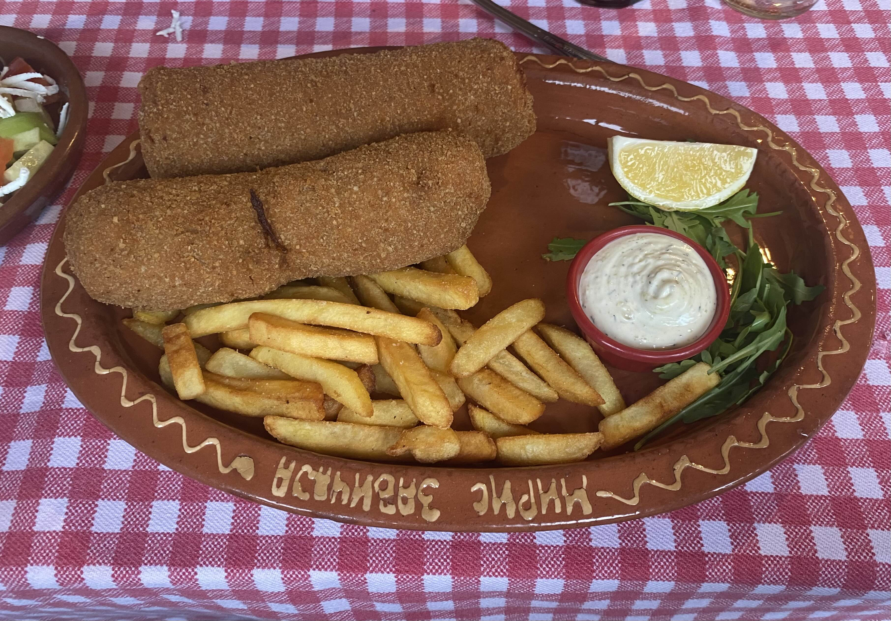
Karađorđeva šnicla is a true masterpiece of Serbian cuisine, where indulgence meets tradition. A tender veal or pork roll is stuffed
with creamy kajmak, breaded, and fried to golden perfection, creating a crispy exterior that gives way to a luscious, melting center.
Served with roasted potatoes, tartar sauce, and a touch of local charm, every bite tells a story of culinary artistry and Serbian
heritage — a dish that invites visitors to experience the country’s rich flavors and heartful hospitality.
Gibanica
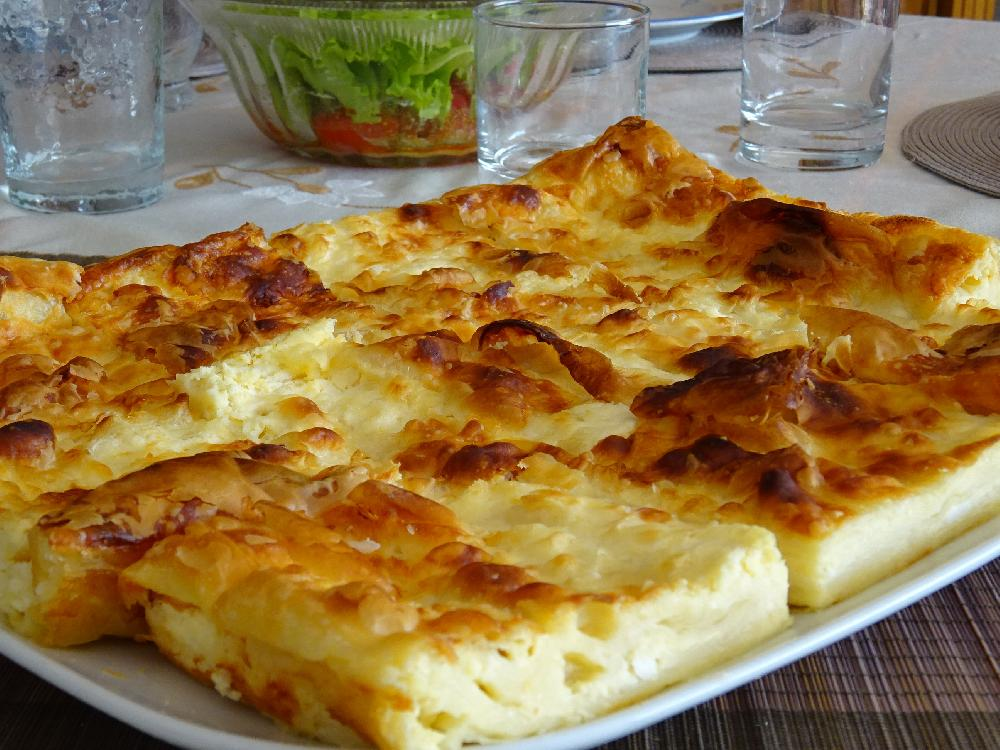
Gibanica in Serbia is a treasured culinary delight, embodying the warmth of home and the richness of tradition. This layered pastry
combines tender phyllo dough with a luscious filling of fresh cheese, eggs, and sometimes yogurt or spinach, baked until golden and
perfectly flaky. Each bite is a comforting harmony of creamy and crisp textures, reflecting generations of Serbian kitchen artistry.
A must-try for visitors, gibanica offers a true taste of Serbia’s heart and heritage.
Vanilice
Vanilice are a sweet, delicate treasure of Serbian baking, perfect for those with a love of tender treats. These little sandwich
cookies are filled with rich apricot or plum jam and dusted generously with powdered sugar, creating a melt-in-your-mouth experience.
Each bite carries the warmth of home and the charm of tradition, making vanilice not just a dessert, but a small, joyful moment in
every visit to Serbia.
Krofne
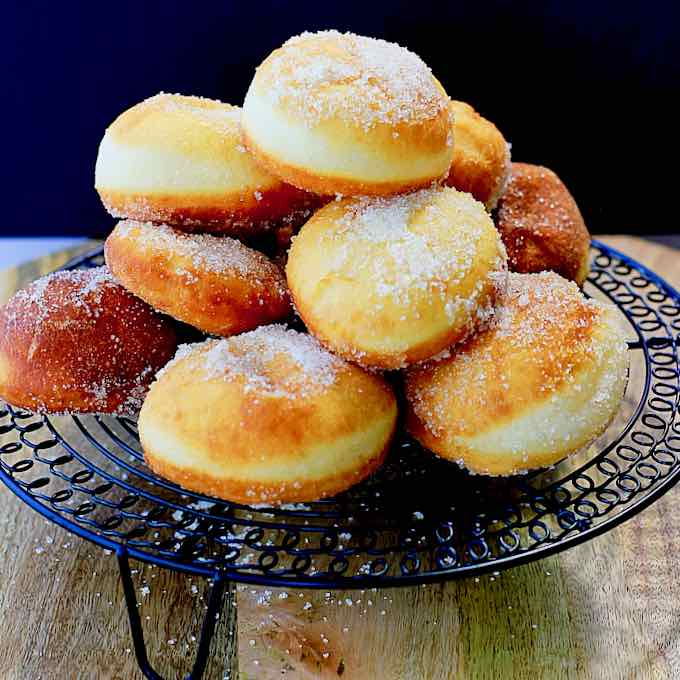
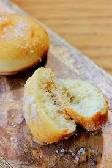
Krofne are the soft, pillowy donuts that capture the heart of Serbian patisseries and home kitchens alike. Lightly fried to golden
perfection and often dusted with powdered sugar or filled with jam, chocolate, or custard, they are a sweet indulgence that evokes
childhood memories and festive mornings. Every bite of a krofna is a warm embrace, making it a must-try treat for anyone exploring
the flavors of Serbia.
Orehnjača
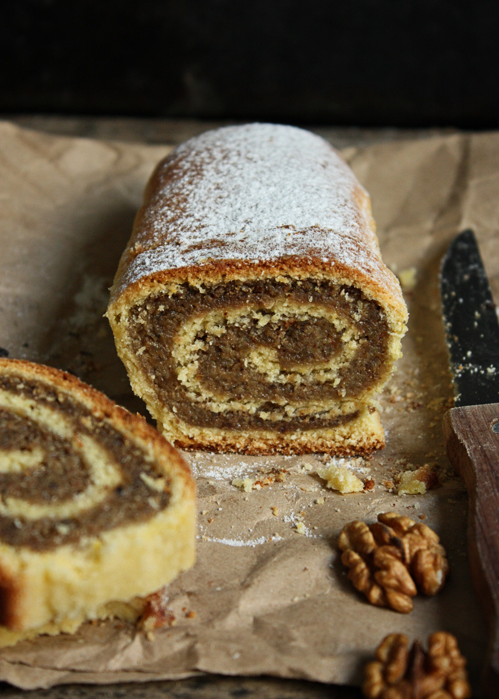
Orehnjača is a classic Serbian walnut roll that marries rich, nutty flavors with tender, sweet dough. Rolled meticulously and baked to
a golden finish, each slice reveals swirls of finely ground walnuts, sugar, and a hint of spice, creating a comforting aroma that
fills homes and bakeries alike. Traditionally enjoyed with coffee or tea, Orehnjača is more than a pastry — it’s a slice of Serbian
heritage, offering both warmth and indulgence in every bite.
 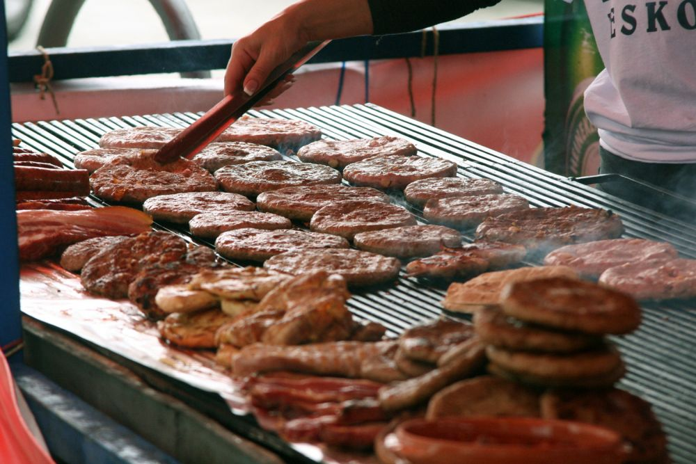
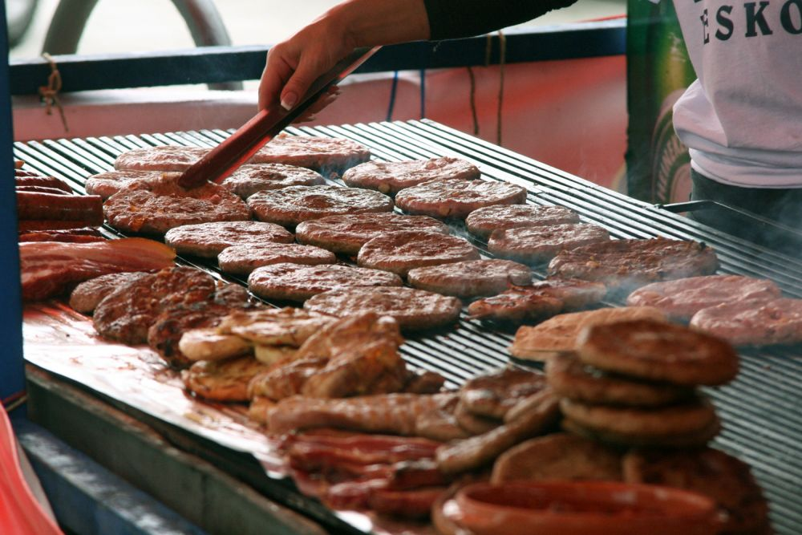

 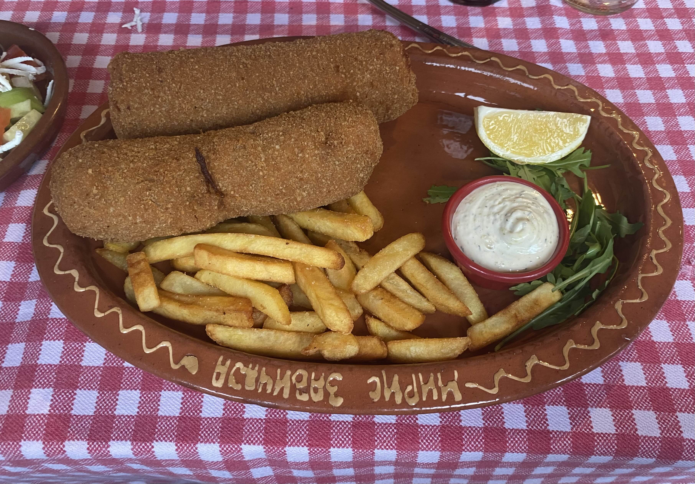
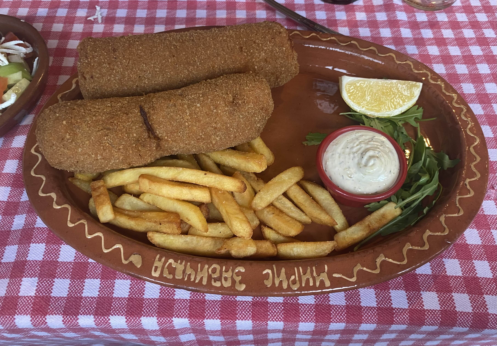
 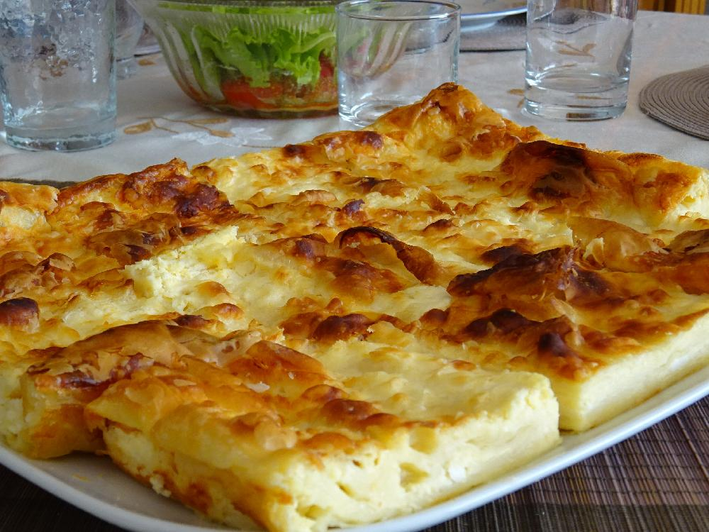
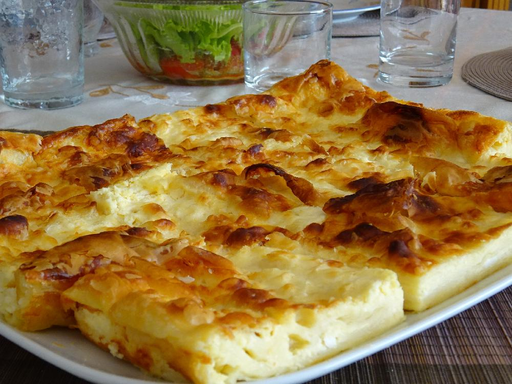


 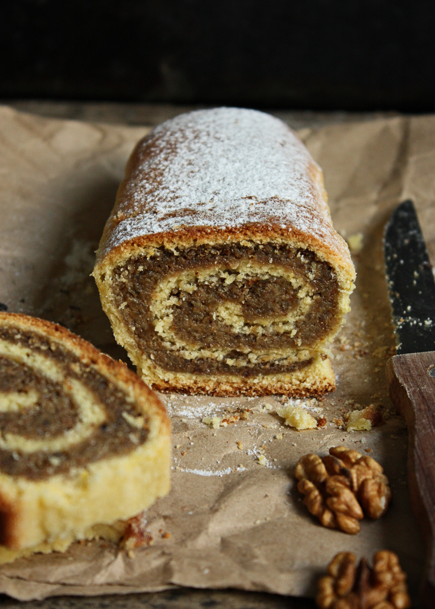
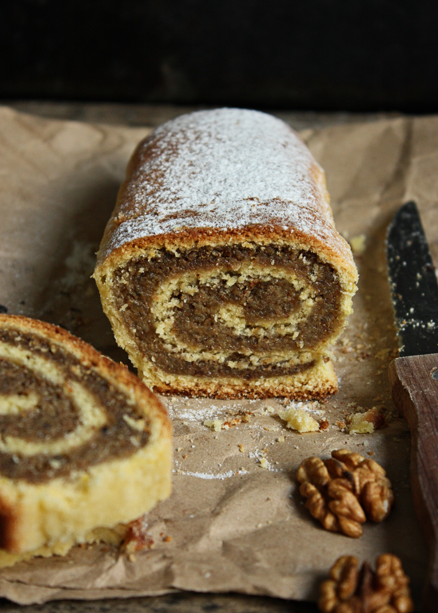